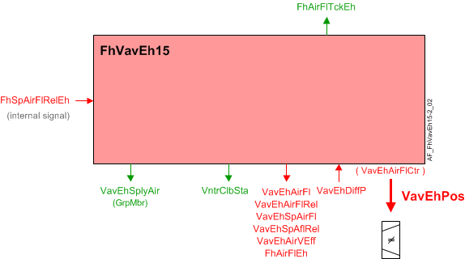

Fume hood exhaust air VAV box, differential pressure sensor, duct area, internal airflow controller, venturi valve (FhVavEh15)
Overview
The application function "Fume hood exhaust air VAV 15, differential pressure sensor, duct area, internal air flow controller, venturi valve" (FhVavEh15) operates the fume hood exhaust VAV Venturi valve based on the exhaust airflow and exhaust airflow setpoint. Exhaust airflow is calculated from a differential pressure sensor signal input and duct area. Exhaust duct area is calculated from duct shape and dimensions.
The main output of this AF is a modulating single analog output (AO) representing the exhaust damper position (VavExPos) as a percentage of full open.
Note
To calculate extract air volume flow, this AF uses a duct area calculation and input from an air velocity sensor.
Main features:
- VAV exhaust damper modulation for non critical room pressurization
- Exhaust air volume flow setpoint calculation
- Exhaust air volume flow calculation
- Airflow coefficient calculation (air balancing logic)
Function
The figure below shows BACnet objects associated with this application function. Primary signal flow is summarized as follows:
Basic function: Fume hood exhaust airflow volume setpoint (FhSpAirFlRelEh OR VavEhSpAirFl) is received and processed into the output signal for VAV exhaust damper position (VavEhPos).

| Command or request (or related) |
| Notification of condition or status, or availability |
| Device mode |


Fume hood mode
The fume hood operating mode is a multistate process value object whos state is determined by the occupancy status of the fume hood, effective administrative mode, the state of the fire alarm, emergency alarm and emergency alarm timer. The fume hood mode is used by the setpoint, VAV, and ODP AFs.
Airflow control with Venturi air valve: The AF has three ways to control airflow with the Venturi valve: PID control, a linear characterization curve, and the linear characterization curve combined with PID control. The user selects the loop control by setting the configuration property (AirFlCtlMod) and by setting up the data table for the characterization curve.
AirFlCtlMod | Characterization Curve | Setpoint | Control action |
|---|---|---|---|
closed loop | configured | > AirVMinCtlClb | combined |
closed loop | configured | < AirVMinCltClb | curve only |
closed loop | not configured | any | PID only |
closed loop | configured | any | curve only |
closed loop | not configured | any | fail mode |
open loop | configured | > AirVMinCtlClb | curve only |
open loop | configured | < AirVMinCltClb | curve only |
open loop | not configured | > AirVMinCtlClb | curve only (output to actuator will be zero) |
open loop | not configured | < AirVMinCltClb | curve only (output to actuator will be zero) |
open loop | configured | any | curve only |
open loop | not configured | any | fail mode |
-- | calibrating | -- | curve |
PID control: The PID control will be used when the closed loop configuration is selected and the characterization table has not been configured.
The PID controller is fixed in the modulating mode. Two-position operation, if needed, is achieved by providing a 2-position setpoint signal.
Linear characterization curve: Open loop control, by the 15 point linear characterization curve will be used to position the venturi when open loop control is selected.
Open loop control is also active if the user selects closed loop control and the airflow setpoint equates to an velocity setpoint of less than the minimum control velocity (AirVMinCtlClb). The default setting is 1.778 m/s (350 fpm).
The x and y points for the linear characterization curve can be entered manually or they can be automatically entered by running the venturi calibration.
Linear characterization curve with PID: Combined control applies when configured closed loop control is selected and the characterization curve is configured, and the airflow setpoint, the duct velocity is above the minimum velocity for control.
When the setpoint changes quickly, and both calculation paths respond, the system is likely to overshoot. To reduce this tendency, the setpoint signal to the PID controller is delayed to arrive in synch with change in airflow caused by the open loop actuator movement. For most effective operation, users should adjust the delay (TiConSpAflRel) to correspond to the stroke time of the actuator.
Airflow setpoint: The setpoint AF communicates the relative exhaust airflow setpoint, expressed as a percentage of nominal flow. The minimum and maximum airflow setpoints (VavEhAirFlMin and VavEhAirFlMax) are entered in this AF and provided as outputs for the setpoint AFs to support the possibility of having more than one terminal per fume hood.
Exhaust damper position: The fume hood exhaust damper position (VavEhPos) is an analog value in percent of full open. Its value is determined by the air flow controller (VavEhAirFlCtr) which uses, as one of its inputs, the VAV exhaust relative setpoint arflow (VavEhSpAflRel) present value.
Measured airflow and velocity: Air volume flow (VavEhAirFl) and relative air volume flow (VavSuAirFlRel) is a calculated value, in percent of nominal airflow, from logic that uses the following:
- air velocity sensor signal
- a constant to convert to effective velocity
- flow coefficient value for calibration at user specified airflow setpoint
- duct area in units compatible with the units conversion constant
- nominal airflow value (user entered).
- hood air volume flow value to aid in calculating the correct flow coefficient value
Low sensor value: Configuration settings specify a switch-on point and hysteresis value in units of pressure.
Airflow coefficient: The airflow coefficient is configuration data (VavEhFlCoefCal). Users may enter the coefficient directly or enter their own, independent airflow readings and have the AF calculate and set the flow coefficient.
Duct area calculation: The duct area is calculated based on configuration data.
Supply chain interface: There are two supply chain output signals.
Airflow deviation signal: The supply airflow deviation (VavEhAirFlDvn) signal (in percent) is used for fan speed (static pressure) reset strategies at the air handling unit. It is obtained by measuring the airflow from the supply duct and comparing it to the airflow setpoint.
VavEhAirFlDvn = VavEhSpAflRel minus VavEhAirFlRel
VavEhAirFlDvn will equal 0 in case of invalid condition(s).
Saturation signal: The saturation signal VavEhAflStrtn is a binary object that is True ("Starved") when the airflow control loop cannot get enough air to reach setpoint for a time exceeding a built-in time delay. After the delay expires, open loop operation begins.
Note
VavEhAflStrtn is always off if parameter EnStrtnCal = 0 (No). This allows the user to exclude a particular terminal from the saturation pressure reset system.
In order for Saturation Signal to be True:
1. The Enable Saturation Calibration parameter must be set to Yes (EnStrtnCal=Yes)
2. The output of the VAV controller must be greater than the saturation level (VavEhAirFlCtr>StrtnLvl)
3. The air flow error, which is the setpoint minus airflow value, must be greater than the air flow error limit (AirFlEr>AirFlErLm)
Saturation Signal can only be True when all three parts are satisfied for the duration of DlyOnStrtn.
Emergency alarm: When the fume hood mode is open, the exhaust damper position will be set to 100% at priority 2.
Flow sensor failure: If the air flow sensor object becomes invalid when the Venturi is not set for open loop control, the exhaust damper position is set based on the setting of the configuration extension (AirFlFailMod.
- If AirFlFailMod is set to Hold, the damper will stay in the current position.
- If AirFlFailMod is set to Open, the damper position will be set to 100%.
Normal operation resumes when the sensor object becomes valid.
AVS calibration: The exhaust damper will be held in its current position while the air velocity sensor is calibrating.
Venturi calibration: During the Venturi calibration the exhaust damper position will be determined by the calibration process.
Airflow tracking: FhAirFlTckEh is the output signal to tell the room controller how much air is being exhausted from the room through the fume hood. The airflow track value will be set equal to the exhaust setpoint or a filtered measured volume based on current alarm status, deadband configuration, and the measured flow to setpoint ratio.
The deadband configuration extension item is entered as a percentage of the nominal exhaust volume setting and used to calculate a deadband.
FhAirFlTckEh will be set equal to the exhaust volume setpoint while all of the following conditions exist:
- Fume hood emergency alarm, high alarm, and low alarm are off.
- The configuration extension item for the deadband is greater than 0.0.
- VavEhAirFl is less than HighValue and VavEhAirFl is greater than Low Value.
When the above conditions do not exist, FhAirFlTckEh will be set equal to the measured volume.
Feature configuration
Feature selections for "Room HVAC coordination" are accessed via the Application configuration task in the Configuration component.
Feature (AF) | Feature description | Ref. |
|---|---|---|
Trend for fume hood exhaust air volume flow | None/Active | ☑ |
Configuration
 Objects
Objects
Description | Object | Type | Default value |
|---|---|---|---|
Exhaust air VAV balancing state 1:Initial | VavEhBalSta | MCnfVal | 1:Initial |
Exhaust air VAV balancing mode 1:Maximum exhaust air | VavEhBalMod | MCnfVal | 1:Maximum exhaust air |
Exhaust air VAV air volume flow at hood | VavEhAirFlHood | ACnfVal | 100 [m3/h] |
Exhaust air VAV recorded balancing mode 1:Maximum exhaust air | VavEhBalModRec | MCnfVal | 1:Maximum exhaust air |
Exhaust air VAV recorded air volume flow at hood | VavEhAflHodRec | ACnfVal | 0 [m3/h] |
Exhaust air VAV recorded flow coefficient | VavEhFlCoefRec | ACnfVal | 0.000 |
Exhaust air VAV initial flow coefficient | VavEhFlCoefIni | ACnfVal | 0.000 |
Exhaust air VAV recorded air volume flow | VavEhAirFlRec | ACnfVal | 0 [m3/h] |
Exhaust air VAV recorded position | VavEhPosRec | ACnfVal | 0 [%] |
Exhaust air VAV duct area | VavEhDuctArea | ACnfVal | 0.05 [m2] |
Exhaust air VAV duct shape 1:Rectangular | VavEhDuctShape | MCnfVal | 2:Round |
Exhaust air VAV dimension A | VavEhDmsnA | ACnfVal | 20.0 [cm] |
Exhaust air VAV dimension B | VavEhDmsnB | ACnfVal | 20.0 [cm] |
Exhaust air VAV flow coefficient | VavEhFlCoef | ACnfVal | 0.780 |
Exhaust air VAV maximum air volume flow | VavEhAirFlMax | ACnfVal | 100 [m3/h] |
Exhaust air VAV minimum air volume flow | VavEhAirFlMin | ACnfVal | 50 [m3/h] |
 Parameters
Parameters
Description | Parameter | Default value |
|---|---|---|
Failure mode for air volume flow sensor 0:Hold extract air volume flow | AirFlFailMod | 1:Open extract air volume flow |
Switch-on point for differential pressure | SwiOnPtDiffP | 0.2 [Pa] |
Hysteresis for differential pressure | HysDiffP | 0.1 [Pa] |
Time constant for air volume flow | TiConAirFl | 0 [s] |
Nominal air volume flow | AirFlNom | 0 [m3/h] |
Control mode for air volume flow 0:Open-loop control | AirFlCtlMod | 1:Closed-loop control |
Minimum air velocity for control and venturi calibration | AirVMinCtlClb | 1.78 [m/s] |
Time constant for relative air volume flow setpoint | TiConSpAflRel | 2 [s] |
Switch delay for tracking method to air volume flow | SwiDlyTckMthd | 5 [s] |
Switch tolerance for tracking method to air volume flow | SwiTolTckMthd | 5.0 [%] |
Enable deviation calculation 0:No | EnDvnCal | 1:Yes |
Enable saturation calculation 0:No | EnStrtnCal | 1:Yes |
Saturation level | StrtnLvl | 90 [%] |
Air volume flow error limit | AirFlErLm | 0 [%] |
Switch-on delay saturation | DlyOnStrtn | 60 [s] |
Pressure unit | PUnit | [Pa] |
Air volume flow unit | AirFlUnit | [m3/h] |
Air velocity unit | AirVUnit | [m/s] |
Interface
Interface | Description | Type | Ref. | Owned by |
|---|---|---|---|---|
VavEhPos | Exhaust air VAV position | AO | ◉ | Room segment / Field device |
VavEhDiffP | Exhaust air VAV differential pressure | AI | ◉ | Room segment / Field device |
VavEhAirVEff | Exhaust air VAV effective air velocity | ACalcVal | ● | - |
VavEhSpAirFl | Exhaust air VAV setpoint for air volume flow | APrcVal | ● | - |
VavEhSpAflRel | Exhaust air VAV setpoint for relative air volume flow | ACalcVal | ● | - |
VavEhAirFl | Exhaust air VAV air volume flow | ACalcVal | ● | - |
VavEhAirFlRel | Exhaust air VAV relative air volume flow | ACalcVal | ● | - |
VavEhAirFlDvn | Exhaust air VAV air volume flow deviation | ACalcVal | ● | - |
VavEhAflStrtn | Exhaust air VAV air volume flow saturation 0:Satisfied | BCalcVal | ● | - |
VavEhAirFlCtr | Exhaust air VAV air flow controller | Controller | ● | - |
FhAirFlTckEh | Fume hood exhaust air volume flow tracking | ACalcVal | ● | - |
FhAirFlEh | Fume hood exhaust air volume flow | ACalcVal | ● | - |
TrndFhAirFlEh | Trend for fume hood exhaust air volume flow | FtrSel | ● | - |
VntrEhClbCmd | Exhaust air venturi valve calibration command 1:Ready | MTrgVal | ● | - |
VntrEhClbSta | Exhaust air venturi valve calibration state 1:Initial | MCalcVal | ● | - |
VavEhFlCoefCal | Exhaust air VAV calculated flow coefficient | ACalcVal | ● | - |
VavEhBalCmd | Exhaust air VAV balancing command 1:Ready | MTrgVal | ● | - |
VavEhSplyAir | Exhaust air VAV supply chain for air | GrpMbr | ● | - |
VavEhBalSta | Exhaust air VAV balancing state 1:Initial | MCnfVal | ● | - |
VavEhBalMod | Exhaust air VAV balancing mode 1:Maximum exhaust air | MCnfVal | ● | - |
VavEhAirFlHood | Exhaust air VAV air volume flow at hood | ACnfVal | ● | - |
VavEhBalModRec | Exhaust air VAV recorded balancing mode 1:Maximum exhaust air | MCnfVal | ● | - |
VavEhAflHodRec | Exhaust air VAV recorded air volume flow at hood | ACnfVal | ● | - |
VavEhFlCoefRec | Exhaust air VAV recorded flow coefficient | ACnfVal | ● | - |
VavEhFlCoefIni | Exhaust air VAV initial flow coefficient | ACnfVal | ● | - |
VavEhAirFlRec | Exhaust air VAV recorded air volume flow | ACnfVal | ● | - |
VavEhPosRec | Exhaust air VAV recorded position | ACnfVal | ● | - |
VavEhDuctArea | Exhaust air VAV duct area | ACnfVal | ● | - |
VavEhDuctShape | Exhaust air VAV duct shape 1:Rectangular | MCnfVal | ● | - |
VavEhDmsnA | Exhaust air VAV dimension A | ACnfVal | ● | - |
VavEhDmsnB | Exhaust air VAV dimension B | ACnfVal | ● | - |
VavEhFlCoef | Exhaust air VAV flow coefficient | ACnfVal | ● | - |
VavEhAirFlMax | Exhaust air VAV maximum air volume flow | ACnfVal | ● | - |
VavEhAirFlMin | Exhaust air VAV minimum air volume flow | ACnfVal | ● | - |
Engineering and commissioning
Check for correct damper actuator installation. Actuator mis-wiring or improper installation is a major cause of common problems.
The relative air flow (VavExAirFlRel) is normalized as a percentage (0 - 100%) of VavExAirFl based on the nominal (rated) value for the box air flow (AirFlNom).